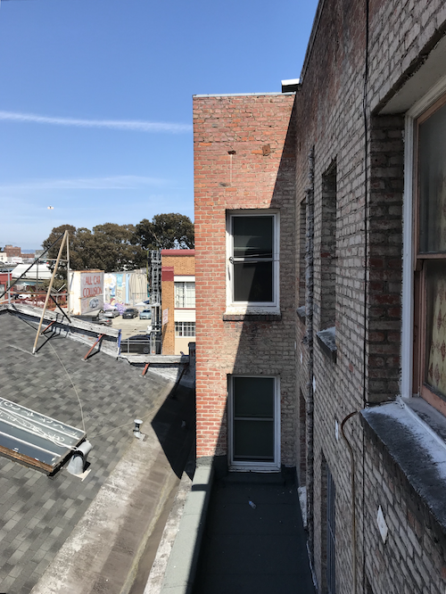
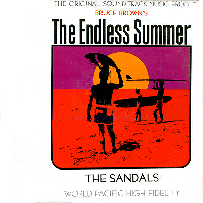

Interpretations of the view from my kitchen window.
For the initial concept, I drew upon The Poetics of Space by Gaston Bachelard, a book I recently read that places emphasis on the lived-experiences of spaces rather than their structural or historical origins. Ellsworth Kelly’s depiction of shadows cast through a railing inspired me to use my (quite limited) view as the foundation of an exercise in geometric abstraction.
The form and palette of each view were meant to convey key principles of gestaltism: reification, multistability and invariance.
Interactions were meant to foreground the “user as performer” concepts outlined in the work of Muriel Cooper and Brenda Laurel’s Computers As Theater.
The colors were inspired by a recent trip to Mexico City and the Endless Summer album cover.
The View is a static web app, so you can download the files, cd root/of/project and execute python -m SimpleHTTPServer. It is also hosted at jaymollica.github.io/the-view/.
The project is structured in such a way that each view can act as a stand-alone site. There is some redundancy when constructing the views (esp #2 and #3), but I felt this modular approach best serves the spirit of the project. Mostly this is vanilla JS with minimal CSS / HTML. To save some time, I used tones.js in View #2 to wire up the audio interaction.
Due to time constraints, I didn't have the opportunity to wire up an interaction for each view. Though there are currently three views, this project could grow into a portfolio of “micro-interactions” each with its own isolated exploration of a browser / mobile / or otherwise digital interaction. I see this project as a sort of spiritual successor to John Maeda’s Reactive Books series, which explores the subtleties of human-computer interaction and how the rapid development of digital tools has changed how we work.
I really enjoyed this exercise and I plan on continuing to develop this project in the future. In my previous role at SFMOMA, I organized and lead Rethink: Web, a workshop exploring ways the web could better foster exploration, expression and connectivity. My intro to the project can be found on Open Space. Thanks for reading!
Jay Mollica
www.jaymollica.com (portfolio)
jaymollica@gmail.com